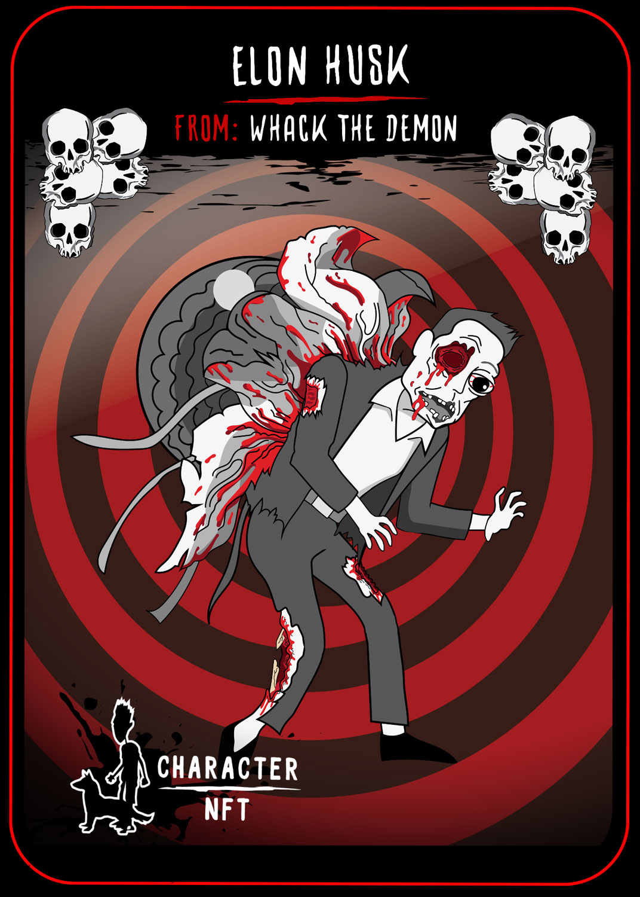

Play to Burn Ticket for WYUN
The Play to Burn ticket can be farmed in the Fear Farm and is required to take part in the Whack Your Undead Neighbour Play to Earn modes. Each ticket will give you two attempts to win 25 FEAR while farming the ticket from the NFT farm will burn 10 FEAR.

Elon Husk in Whack the Demon (Only 5 Available)
Deploy Elon in the upcoming "Whack the Demon: Endless Nightmare Mode" P2E mode to help you survive longer. Elon Husk serves are a decoy beacon in the game while also possessing an incredibly hard shell to hide under. Available in the Fear Farm

Charles the Octopus in Clucking Hell
A defense unit to be deployed in Clucking Hell to help you survive against the undead farm animals. Charles i Patrick's pet Octopus, he gets fed up of being stuffed in a fish bowl so he loves nothing more than the opportunity to escape his glass prison and exercise his tentacles. Available in the Fear Farm

Undead Bacon in WYUN
This pig does more than just squeal, infact when you deploy him in our upcoming "Clucking Hell" mode he's going to eat some of this undead animals for breakfast! Available in the Fear Farm

BBKill in WYUN
It's time to switch your menu up, from sausages to grilled undead flesh. Available in the Fear Farm

World of Whack It
Bringing our classic old blood soaked games back to life via an exclusive blockchain downloadable version. Available in the Fear Farm
{kind=link}